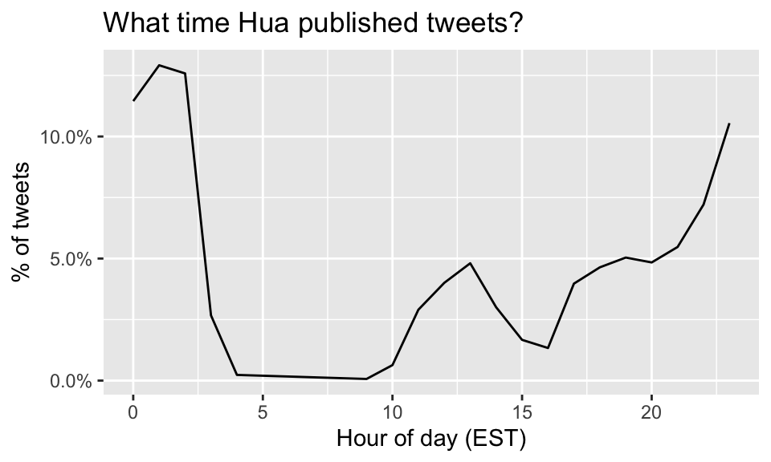
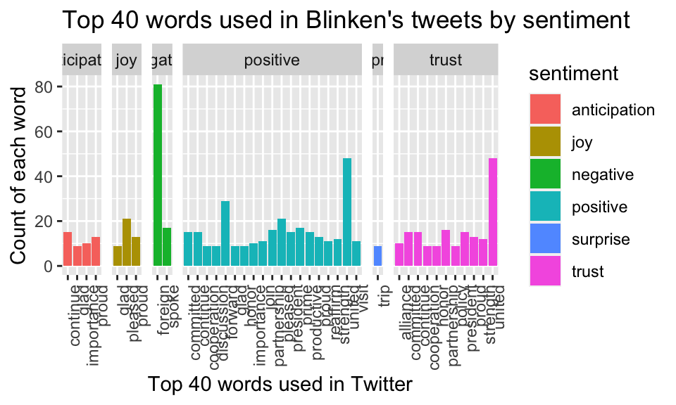

R Coding
Yuqi Zhao
4/20/2021
Preliminary exploraions
First, let’s compare the time at which Blinken and Hua tweets. Based on West Coast time (EST,) we see that Blinken tweets the most at around 9:30am of the day and the number declines as the day turns night. However, Hua follows an opposite pattern, tweeting the most at around 1am EST and stays active in the night time. The opposite styles is probably due to the 12-hour-difference betweeen the U.S. and China.
# see time of the data "created_at" tweet distribution plot
Hua %>%
count(hour = hour(with_tz(created_at, "EST"))) %>%
mutate(percent = n/sum(n)) %>%
ggplot(aes(x = hour, y = percent)) +
labs(x = "Hour of day (EST)", y = "% of tweets", color = "") +
scale_y_continuous(labels = percent_format()) +
geom_line() + labs(title = "What time Hua published tweets?")
Blinken %>%
count(hour = hour(with_tz(created_at, "EST"))) %>%
mutate(percent = n/sum(n)) %>%
ggplot(aes(x = hour, y = percent)) +
labs(x = "Hour of day (EST)", y = "% of tweets", color = "") +
scale_y_continuous(labels = percent_format()) +
geom_line() + labs(title = "What time Blinken published tweets?")
Then, we can look at how many of the tweets have pictures or links for Blinken and Hua. Hua has almost 6 times more tweets than Blinken (this is because she joined 2 years earlier than Blinken.) From the graphs, we can see that Hua tends to tweet with picture or link more than Blinken but tweets with picture or link are in the minority for both of them.
# Count the number of tweets with and without picture/links
tweet_picture_counts_Hua <- Hua %>%
filter(!str_detect(text, '^"')) %>%
count(picture = ifelse(str_detect(text, "t.co"),
"Picture/link", "No picture/link"))
tweet_picture_counts_Blinken <- Blinken %>%
filter(!str_detect(text, '^"')) %>%
count(picture = ifelse(str_detect(text, "t.co"),
"Picture/link", "No picture/link"))
# Make bar plots
ggplot(tweet_picture_counts_Hua, aes(x = picture, y = n)) +
geom_bar(stat = "identity", position = "dodge") +
labs(x = "", y = "Number of tweets", fill = "") + labs(title = "The number of tweets with and without picture/links (Hua)")ggplot(tweet_picture_counts_Blinken, aes(x = picture, y = n)) +
geom_bar(stat = "identity", position = "dodge") +
labs(x = "", y = "Number of tweets", fill = "")+ labs(title = "The number of tweets with and without picture/links (Blinken)")Most commonly used words and word clouds
Most commonly used words:
In this section, we plot the most commonly used words for Blinken and Hua and plot word clouds for both of them. Below are the most commonly used words by Blinken and Hua, using the regular expression pattern method that filters for words and digits. It also includes hashtags, @, digits, but not punctuation.
# Load the tidytext package - to bag the sentence into texts
library(tidytext)
# Create a regex pattern
reg <- "([^A-Za-z\\d#@']|'(?![A-Za-z\\d#@]))"
# Unrest the text strings into a data frame of words
tweet_words_Hua <- Hua %>%
filter(!str_detect(text, '^"')) %>%
mutate(text = str_replace_all(text, "https://t.co/[A-Za-z\\d]+|&", "")) %>%
unnest_tokens(word, text, token = "regex", pattern = reg) %>%
filter(!word %in% stop_words$word,
str_detect(word, "[a-z]"))
tweet_words_Blinken <- Blinken %>%
filter(!str_detect(text, '^"')) %>%
mutate(text = str_replace_all(text, "https://t.co/[A-Za-z\\d]+|&", "")) %>%
unnest_tokens(word, text, token = "regex", pattern = reg) %>%
filter(!word %in% stop_words$word,
str_detect(word, "[a-z]"))
# Plot the most common words
tweet_words_Hua %>%
count(word, sort = TRUE) %>%
head(20) %>%
mutate(word = reorder(word, n)) %>%
ggplot(aes(x = word, y = n)) +
geom_bar(stat = "identity") +
ylab("Occurrences") +
coord_flip() + labs(title = "Most common words of Hua")
tweet_words_Blinken %>%
count(word, sort = TRUE) %>%
head(20) %>%
mutate(word = reorder(word, n)) %>%
ggplot(aes(x = word, y = n)) +
geom_bar(stat = "identity") +
ylab("Occurrences") +
coord_flip()+ labs(title = "Most common words of Blinken")Word clouds
Below are word clouds for Blinken and Hua, using stemming method that gets rid of stop words, punctuation, white space, number and customized words such as “the, https, t.co, with” and so on. The size and color of each words signals how often the word is used in Blinken and Hua’s tweets.
Hua Word Could:
hua_docs <- Corpus(VectorSource(hua_text))
hua_toSpace <- content_transformer(function (x , pattern ) gsub(pattern, " ", x))
hua_docs <- tm_map(hua_docs, hua_toSpace, "/")
hua_docs <- tm_map(hua_docs, hua_toSpace, "@")
hua_docs <- tm_map(hua_docs, hua_toSpace, "\\|")
# Convert the text to lower case
hua_docs <- tm_map(hua_docs, content_transformer(tolower))
# Remove numbers
hua_docs <- tm_map(hua_docs, removeNumbers)
# Remove common stopwords
#hua_docs <- tm_map(hua_docs, removeWords, stopwords("https"))
# specify your stopwords as a character vector
hua_docs <- tm_map(hua_docs, removeWords, c("https", "t.co","the", "and", "with", "for", "has", "will", "that", "are", "is", "this"))
# Remove punctuations
hua_docs <- tm_map(hua_docs, removePunctuation)
# Eliminate extra white spaces
hua_docs <- tm_map(hua_docs, stripWhitespace)
# Text stemming
hua_docs <- tm_map(hua_docs, stemDocument)hua_dtm <- TermDocumentMatrix(hua_docs)
m <- as.matrix(hua_dtm)
v <- sort(rowSums(m),decreasing=TRUE)
d <- data.frame(word = names(v),freq=v)
# head(d, 50)
set.seed(1234)
wordcloud(words = d$word, freq = d$freq, min.freq = 1,
max.words=200, random.order=FALSE, rot.per=0.35,
colors=brewer.pal(50, "Dark2"))Blinken Word Cloud:
bli_docs <- Corpus(VectorSource(bli_text))bli_toSpace <- content_transformer(function (x , pattern ) gsub(pattern, " ", x))
bli_docs <- tm_map(bli_docs, bli_toSpace, "/")
bli_docs <- tm_map(bli_docs, bli_toSpace, "@")
bli_docs <- tm_map(bli_docs, bli_toSpace, "\\|")
# Convert the text to lower case
bli_docs <- tm_map(bli_docs, content_transformer(tolower))
# Remove numbers
bli_docs <- tm_map(bli_docs, removeNumbers)
# Remove common stopwords
bli_docs <- tm_map(bli_docs, removeWords, c("https", "tco","the", "and", "with", "for", "has", "will", "that", "are", "is", "this", "t.co"))
# Remove punctuations
bli_docs <- tm_map(bli_docs, removePunctuation)
# Eliminate extra white spaces
bli_docs <- tm_map(bli_docs, stripWhitespace)
# Text stemming
bli_docs <- tm_map(bli_docs, stemDocument)
bli_dtm <- TermDocumentMatrix(bli_docs)
m <- as.matrix(bli_dtm)
v <- sort(rowSums(m),decreasing=TRUE)
d <- data.frame(word = names(v),freq=v)
# head(d, 50)
set.seed(1234)
wordcloud(words = d$word, freq = d$freq, min.freq = 1,
max.words=200, random.order=FALSE, rot.per=0.35,
colors=brewer.pal(50, "Dark2"))
Sentiment analysis:
Top words used by Blinken and Hua by sentiment category
Below, we exaime the top 40 words used by Blinken and Hua by sentiment category.
Hua_sentiment <-
inner_join(tweet_words_Hua, nrc, by = "word") %>%
group_by(sentiment) %>%
count(word, sort = TRUE) %>%
head(40)
Blinken_sentiment <-
inner_join(tweet_words_Blinken, nrc, by = "word") %>%
group_by(sentiment) %>%
count(word, sort = TRUE) %>%
head(40)
ggplot(Hua_sentiment, aes(x = word, y = n, fill = sentiment)) +
facet_grid(~ sentiment, scales = "free", space="free_x") +
geom_bar(stat = "identity", position = "dodge", width = 0.9) +
theme(axis.text.x = element_text(angle = 90, hjust = 1)) + theme (plot.title = element_text(hjust = 0.5)) +
labs(x = "Top 40 words used in Twitter", y = "Count of each word", title = "Top 40 words used in Hua's tweets by sentiment") ggplot(Blinken_sentiment, aes(x = word, y = n, fill = sentiment)) +
facet_grid(~ sentiment, scales = "free", space="free_x") +
geom_bar(stat = "identity", position = "dodge", width = 0.9) +
theme(axis.text.x = element_text(angle = 90, hjust = 1)) +
labs(x = "Top 40 words used in Twitter", y = "Count of each word", title = "Top 40 words used in Blinken's tweets by sentiment")
How likely is a certain commonly used word used by Hua or Blinken?
In this part, we calculate the log odds ratio of commonly used words by candidate (how likely is a certain word used by Hua or Blinken.) The first graph shows the top 20 commonly used words and their likelihood of coming from each candidate. The second graph shows the log odds ratio of words by person in grouped sentiments.
tweet_words_Hua = tweet_words_Hua %>% mutate(source="Hua")
tweet_words_Blinken = tweet_words_Blinken %>% mutate(source="Blinken")
rbind(tweet_words_Blinken,tweet_words_Hua) -> combined
combined_sentiment <-
inner_join(combined, nrc, by = "word") %>%
group_by(sentiment)
# calculate the log score of how likely a word comes from Hua or Blinken
Hua_Blinken_ratios <-
combined %>%
count(word, source) %>%
group_by(word) %>%
filter(sum(n) >= 5) %>%
spread(source, n, fill = 0) %>%
ungroup() %>%
mutate_if(is.numeric, ~((. + 1) / sum(. + 1))) %>%
mutate(logratio = log2(Hua / Blinken)) %>%
arrange(desc(logratio))
#plot the top 20 common words in the combined word set and their likelihood of belong to each candidate
Hua_Blinken_ratios %>%
top_n(20, abs(logratio)) %>%
ungroup() %>%
mutate(word = reorder(word, logratio)) %>%
ggplot(aes(x = word, y = logratio, fill = logratio < 0)) +
geom_bar(stat = "identity") +
coord_flip() +
ylab("Hua / Blinken log ratio") +
labs(title = "How likely is a word coming from Blinken or Hua by sentiments (top 20 words)?")+
scale_fill_manual(name = "", labels = c("Hua", "Blinken"),
values = c("red", "lightblue"))#look at sentiments and predict whether a tweet is from Hua or Blinken
Hua_Blinken_sentiment <- Hua_Blinken_ratios %>%
inner_join(nrc, by = "word") %>%
filter(!sentiment %in% c("positive", "negative")) %>%
mutate(sentiment = reorder(sentiment, -logratio),
word = reorder(word, -logratio)) %>%
group_by(sentiment) %>%
top_n(10, abs(logratio)) %>%
ungroup()
# Plot the log odds ratio of words by person in groups sentiments
ggplot(Hua_Blinken_sentiment, aes(x = word, y = logratio, fill = logratio < 0)) +
facet_wrap(~ sentiment, scales = "free", nrow = 2) +
geom_bar(stat = "identity") +
theme(axis.text.x = element_text(angle = 90, hjust = 1)) +
labs(x = "", y = "Hua / Blinken log ratio", title = "How likely is a word coming from Blinken or Hua (by sentiments)?") +
scale_fill_manual(name = "", labels = c("Hua", "Blinken"),
values = c("red", "lightblue"))